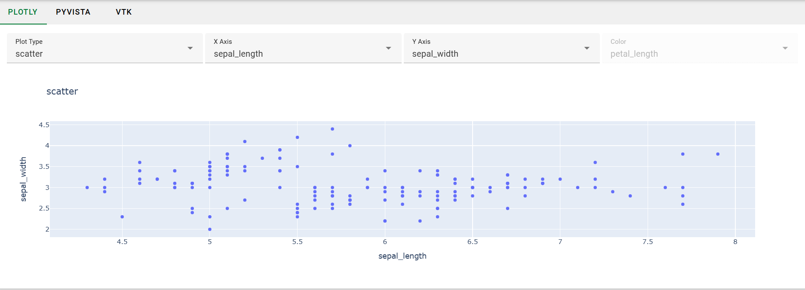
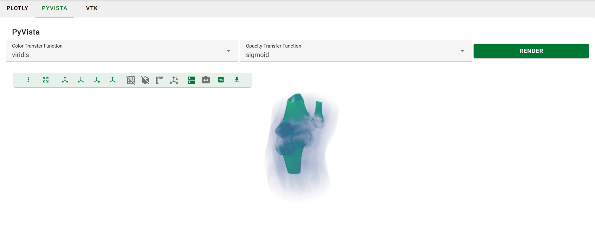
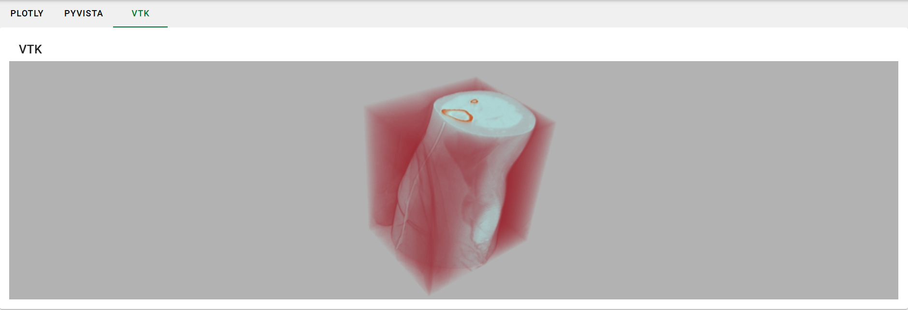

Advanced Visualizations
Last updated on 2025-10-10 | Edit this page
Estimated time: 61 minutes
Overview
Questions
- How can I create interactive 2D charts in my NOVA application?
- How can I integrate Plotly charts into Trame applications?
- How can I create interactive 3D visualizations in my NOVA application?
- What are the advantages and disadvantages of using PyVista vs. VTK for 3D visualizations?
- How can I integrate PyVista visualizations into Trame applications?
- How can I work directly with VTK for more advanced 3D visualizations in Trame?
- What are the key components of a VTK rendering pipeline?
Objectives
- Describe the purpose of Plotly for interactive 2D charts.
- Explain how to integrate Plotly charts into Trame applications using
trame-plotly. - Describe the purpose of PyVista for interactive 3D visualizations.
- Explain how to integrate PyVista visualizations into Trame
applications using
trame-vtk. - Explain how to work directly with VTK for 3D visualizations within Trame applications.
- Understand the basic boilerplate code required to set up a VTK rendering pipeline in Trame.
Advanced Visualizations
In this section, we will look at a selection of the libraries that integrate well with Trame for producing more sophisticated visualizations of your data. Specifically, we will look at Plotly for interactive 2D charts, PyVista for interactive 3D visualizations, and VTK for advanced 3D visualizations.
The complete code for this episode is available in the
code/episode_7 directory. This code defines a Trame
application that presents three views (one each for Plotly, PyVista, and
VTK) that the user can choose between with a tab widget.
Setup
Let's start by setting up a new application from the template. When
answering the copier questions, make sure you select “no”
for installing Mantid and set up a Trame-based, multi-tab view based on
MVVM.
BASH
copier copy https://code.ornl.gov/ndip/project-templates/nova-application-template.git viz_tutorialWhat kind of application are you creating? > Enter
Nova Application-
What is your project name?
Enter
Viz Examples Which category will your tool belong to? > Enter
Generic-
What is your Python package name (use Python naming conventions)?
Press enter to accept the default.
-
Do you want to install Mantid for your project?
Enter
no -
** Are you developing a GUI application using MVVM pattern?**
Enter
yes -
** Which library will you use?**
Select
Trame -
**Do you want a template with multiple tabs?
Enter
yes
Plotly (2D)
Trame provides a library called trame-plotly for connecting Trame and Plotly. You can install it with:
The pandas install is only necessary for loading example data from Plotly, which we’ll be doing in this tutorial.
Now, we can create a view that displays a Plotly figure.
1. PlotlyView View Class
(src/viz_examples/app/views/plotly.py)
(Create):
- Imports: Pay special attention to the plotly import. This module contains a Trame widget that will allow us to quickly add a Plotly chart to our view.
PYTHON
"""View for Plotly."""
import plotly.graph_objects as go
from nova.trame.view.components import InputField
from nova.trame.view.layouts import GridLayout, HBoxLayout
from trame.widgets import plotly
from ..view_models.main import MainViewModel- Class Definition: The view model connections allow us to connect the controls we will define in create_ui() to the server and update the Plotly chart after a control is changed.
PYTHON
class PlotlyView:
"""View class for Plotly."""
def __init__(self, view_model: MainViewModel) -> None:
self.view_model = view_model
self.view_model.plotly_config_bind.connect("plotly_config")
self.view_model.plotly_figure_bind.connect(self.update_figure)
self.create_ui()
self.view_model.update_plotly_figure()- Controls: These controls will dynamically update the Plotly chart.
PYTHON
def create_ui(self) -> None:
with GridLayout(columns=4, classes="mb-2"):
InputField(v_model="plotly_config.plot_type", type="select")
InputField(v_model="plotly_config.x_axis", type="select")
InputField(v_model="plotly_config.y_axis", type="select")
InputField(
v_model="plotly_config.z_axis",
disabled=("plotly_config.is_not_heatmap",),
type="select",
)-
Chart Definition: Here, we use the imported Trame
widget for Plotly to define the chart. This widget includes an
updatemethod that allows us to change the content after the initial rendering.
PYTHON
with HBoxLayout(halign="center", height="50vh"):
self.figure = plotly.Figure()
def update_figure(self, figure: go.Figure) -> None:
self.figure.update(figure)
self.figure.state.flush() # This is necessary if you call update asynchronously.As with our previous examples, there is a corresponding model.
2. PlotlyConfig Model Class
(src/viz_examples/app/models/plotly.py) (Create):
- Imports: The graph_objects module is how we will define the content for our chart. The iris module defines an example dataset.
PYTHON
"""Configuration for the Plotly example."""
from enum import Enum
import plotly.graph_objects as go
from plotly.data import iris
from pydantic import BaseModel, Field, computed_field
IRIS_DATA = iris()- Pydantic definition: Here we define the controls for our view.
PYTHON
class AxisOptions(str, Enum):
sepal_length = "sepal_length"
sepal_width = "sepal_width"
petal_length = "petal_length"
petal_width = "petal_width"
class PlotTypeOptions(str, Enum):
heatmap = "Heatmap"
scatter = "Scatterplot"
class PlotlyConfig(BaseModel):
"""Configuration class for the Plotly example."""
x_axis: AxisOptions = Field(default=AxisOptions.sepal_length, title="X Axis")
y_axis: AxisOptions = Field(default=AxisOptions.sepal_width, title="Y Axis")
z_axis: AxisOptions = Field(default=AxisOptions.petal_length, title="Color")
plot_type: PlotTypeOptions = Field(default=PlotTypeOptions.scatter, title="Plot Type")
@computed_field # type: ignore
@property
def is_not_heatmap(self) -> bool:
return self.plot_type != PlotTypeOptions.heatmap-
Plotly Figure Setup: Finally, we define the Plotly
figure based on the user's selection. go.Heatmap and go.Scatter define
Plotly
traces, which represent individual components of the figure.
PYTHON
def get_figure(self) -> go.Figure:
match self.plot_type:
case PlotTypeOptions.heatmap:
plot_data = go.Heatmap(
x=IRIS_DATA[self.x_axis].tolist(),
y=IRIS_DATA[self.y_axis].tolist(),
z=IRIS_DATA[self.z_axis].tolist()
)
case PlotTypeOptions.scatter:
plot_data = go.Scatter(
x=IRIS_DATA[self.x_axis].tolist(),
y=IRIS_DATA[self.y_axis].tolist(),
mode="markers"
)
case _:
raise ValueError(f"Invalid plot type: {self.plot_type}")
figure = go.Figure(plot_data)
figure.update_layout(
title={"text": f"{self.plot_type}"},
xaxis={"title": {"text": self.x_axis}},
yaxis={"title": {"text": self.y_axis}},
)
return figure-
Binding the new view and model: Now, we need to add
PlotlyViewto our view and bindPlotlyConfigto it in the view model.
First, let’s add replace the sample tabs from the template with the following:
3.
src/viz_examples/app/views/tab_content_panel.py
(Modify):
- Import
PlotlyView
-
Update
create_ui: We should remove the sample content from the template and add our new view here.
PYTHON
def create_ui(self) -> None:
with vuetify.VForm(ref="form") as self.f:
with vuetify.VContainer(classes="pa-0", fluid=True):
with vuetify.VCard():
with vuetify.VWindow(v_model="active_tab"):
with vuetify.VWindowItem(value=1):
PlotlyView(self.view_model)And add the corresponding import:
We also need to update the tabs to show an option for the Plotly view.
4. src/viz_examples/app/views/tabs_panel.py
(Modify):
PYTHON
def create_ui(self) -> None:
with vuetify.VTabs(v_model=("active_tab", 0), classes="pl-5"):
vuetify.VTab("Plotly", value=1)Finally, we’ll need to update the view model to bind our new classes.
5. src/viz_examples/app/view_models/main.py
(Modify):
- Import
PlotlyConfig
- Update
__init__
PYTHON
def __init__(self, model: MainModel, binding: BindingInterface):
self.model = model
self.plotly_config = PlotlyConfig()
self.plotly_config_bind = binding.new_bind(
linked_object=self.plotly_config, callback_after_update=self.update_plotly_figure
)
self.plotly_figure_bind = binding.new_bind()- Add callback method
PYTHON
def update_plotly_figure(self, _: Any = None) -> None:
self.plotly_config_bind.update_in_view(self.plotly_config)
self.plotly_figure_bind.update_in_view(self.plotly_config.get_figure())Now, if you run the application you should see the following in the Plotly tab:

PyVista (3D)
One of Trame's core features is that it has direct integration with VTK for building 3D visualizations. Learning VTK from scratch is non-trivial, however, so we recommend that you work with PyVista. PyVista serves as a more developer-friendly wrapper around VTK, allowing you to build your visualizations with a simpler, more intuitive API. To get started, you will need to install the Python package.
PyVista contains built-in Trame support, but we still need to install the Trame widget for VTK that PyVista will use internally.
Now we can set up our view.
6. PyVistaView View Class
(src/viz_examples/app/views/pyvista.py):
-
Imports:
plotter_uicontains the Trame widget for PyVista.
PYTHON
"""View for the 3d plot using PyVista."""
from typing import Any, Optional
import pyvista as pv
from nova.trame.view.components import InputField
from nova.trame.view.layouts import GridLayout, HBoxLayout
from pyvista.trame.ui import plotter_ui
from trame.widgets import vuetify3 as vuetify
from ..view_models.main import MainViewModel-
Class Definition: The
Plotterobject is PyVista's main entry point. It will allow you to add meshes and volumes with the properties you've specified.
PYTHON
class PyVistaView:
"""View class for the 3d plot using PyVista."""
def __init__(self, view_model: MainViewModel) -> None:
self.view_model = view_model
self.view_model.pyvista_config_bind.connect("pyvista_config")
self.plotter: Optional[pv.Plotter] = None
self.create_plotter()
self.create_ui()
def create_plotter(self) -> None:
self.plotter = pv.Plotter(off_screen=True)-
View Definition: Now, we can use
plotter_uito create a view into which our rendering will go.
PYTHON
def create_ui(self) -> None:
vuetify.VCardTitle("PyVista")
with GridLayout(columns=5, classes="mb-2", valign="center"):
InputField(
v_model="pyvista_config.colormap", column_span=2, type="select"
)
InputField(
v_model="pyvista_config.opacity", column_span=2, type="select"
)
vuetify.VBtn("Render", click=self.update)
with HBoxLayout(halign="center", height="50vh"):
plotter_ui(self.plotter)
def update(self, _: Any = None) -> None:
if self.plotter:
self.view_model.update_pyvista_volume(self.plotter)7. PyVistaConfig Model Class
(src/viz_examples/app/models/pyvista.py):
-
Imports:
download_knee_fullyields a 3D dataset that is suitable for volume rendering. You can find more datasets in PyVista's Dataset Gallery.
PYTHON
"""Configuration for the PyVista example."""
from enum import Enum
from pydantic import BaseModel, Field
from pyvista import Plotter, examples
KNEE_DATA = examples.download_knee_full()-
Pydantic Configuration: The
Fieldsdefined here will be passed toPlotter.add_volume.
PYTHON
class ColormapOptions(str, Enum):
viridis = "viridis"
autumn = "autumn"
coolwarm = "coolwarm"
twilight = "twilight"
jet = "jet"
class OpacityOptions(str, Enum):
linear = "linear"
sigmoid = "sigmoid"
class PyVistaConfig(BaseModel):
"""Configuration class for the PyVista example."""
colormap: ColormapOptions = Field(default=ColormapOptions.viridis, title="Color Transfer Function")
opacity: OpacityOptions = Field(default=OpacityOptions.linear, title="Opacity Transfer Function")-
Rendering:
add_volumewill return an actor. In practice, you may get better performance by manipulating that actor instead of doing a full re-render.
PYTHON
def render(self, plotter: Plotter) -> None:
# If re-rendering the volume on changes isn't acceptable, then you may need to switch to using VTK directly due
# limitations of the PyVista volume rendering engine.
plotter.clear()
plotter.add_volume(KNEE_DATA, cmap=self.colormap, opacity=self.opacity, show_scalar_bar=False)
plotter.render()
plotter.view_isometric()PyVista's volume rendering engine isn't currently suitable for large data. If you find yourself running into performance issues, then you should likely switch over to using VTK directly.
-
Binding the new view and model: Now, we need to add
PyVistaViewto our view and bindPyVistaConfigto it in the view model.
This is very similar to the Plotly setup.
8.
src/viz_examples/app/views/tab_content_panel.py
(Modify):
- Import
PyVistaView
- Update
create_ui
PYTHON
def create_ui(self) -> None:
with vuetify.VForm(ref="form") as self.f:
with vuetify.VContainer(classes="pa-0", fluid=True):
with vuetify.VCard():
with vuetify.VWindow(v_model="active_tab"):
with vuetify.VWindowItem(value=1):
PlotlyView(self.view_model)
with vuetify.VWindowItem(value=2):
PyVistaView(self.view_model)9. src/viz_examples/app/views/tabs_panel.py
(Modify):
PYTHON
def create_ui(self) -> None:
with vuetify.VTabs(v_model=("active_tab", 0), classes="pl-5"):
vuetify.VTab("Plotly", value=1)
vuetify.VTab("PyVista", value=2)10. src/viz_examples/app/view_models/main.py
(Modify):
- Import
PyVistaConfig
- Update
__init__
PYTHON
def __init__(self, model: MainModel, binding: BindingInterface):
self.model = model
self.plotly_config = PlotlyConfig()
self.pyvista_config = PyVistaConfig()
self.plotly_config_bind = binding.new_bind(
linked_object=self.plotly_config, callback_after_update=self.update_plotly_figure
)
self.plotly_figure_bind = binding.new_bind()
self.pyvista_config_bind = binding.new_bind(linked_object=self.pyvista_config)- Add callback method: This method is called directly from the view due to the need to reference the Plotter object that is created in the view.
PYTHON
def update_pyvista_volume(self, plotter: Plotter) -> None:
self.pyvista_config.render(plotter)Now, if you run the application you should see the following in the PyVista tab:

VTK (3D)
If you have prior experience with VTK then you may prefer to work with it directly. You can get started with it by installing the Python VTK bindings and the Trame widget for VTK.
PyVista isn’t compatible with VTK 9.4, yet. If you are not using PyVista, there is no need to specify the VTK version like this.
Once more, let’s setup a view and model.
11. VTKView View Class
(src/viz_examples/app/views/vtk.py):
-
Imports: The
vtkRenderingVolumeOpenGL2import is necessary despite being unreferenced.
PYTHON
"""View for the 3d plot using PyVista."""
import vtkmodules.vtkRenderingVolumeOpenGL2 # noqa
from nova.trame.view.layouts import HBoxLayout
from trame.widgets import vtk as vtkw
from trame.widgets import vuetify3 as vuetify
from vtkmodules.vtkRenderingCore import vtkRenderer, vtkRenderWindow, vtkRenderWindowInteractor, vtkVolume
from ..view_models.main import MainViewModel- Initialization: Here we define the boiler plate for the interactive VTK window. As with PyVista, setting off-screen rendering to on is necessary when working with Trame.
PYTHON
class VTKView:
"""View class for the 3d plot using PyVista."""
def __init__(self, view_model: MainViewModel) -> None:
self.view_model = view_model
self.create_vtk()
self.create_ui()
self.render()
def create_vtk(self) -> None:
self.renderer = vtkRenderer()
self.renderer.SetBackground(0.7, 0.7, 0.7)
self.render_window = vtkRenderWindow()
self.render_window.AddRenderer(self.renderer)
self.render_window.OffScreenRenderingOn()
self.render_window_interactor = vtkRenderWindowInteractor()
self.render_window_interactor.SetRenderWindow(self.render_window)
self.render_window_interactor.GetInteractorStyle().SetCurrentStyleToTrackballCamera()
self.render_window_interactor.Initialize() # Ensure interactor is initialized-
View Definition: Now, we setup the VTK window and
add our volume rendering to it. By using
VTKRemoteView, we are instructing VTK to perform server-side rendering.
PYTHON
def create_ui(self) -> None:
vuetify.VCardTitle("VTK")
with HBoxLayout(halign="center", height="50vh"):
self.view = vtkw.VtkRemoteView(self.render_window, interactive_ratio=1)
def render(self) -> None:
volume = self.view_model.get_vtk_volume()
self.renderer.Clear()
self.renderer.AddVolume(volume)
self.render_window.Render()12. VTKConfig Model Class
(src/viz_examples/app/models/vtk.py):
-
Imports: We are only using PyVista to get an
example dataset. There are two references to it as we use
KNEE_DATAto compute min/max bounds for the data andKNEE_DATAFILEto pass the data file into a VTK reader. The FixedPointVolumeRayCastMapper is CPU-based, but other mappers are available if you need GPU support.
PYTHON
"""Configuration for the VTK example."""
import numpy as np
from pyvista import examples
from vtk import vtkSLCReader
from vtkmodules.vtkCommonDataModel import vtkPiecewiseFunction
from vtkmodules.vtkRenderingCore import vtkColorTransferFunction, vtkVolume, vtkVolumeProperty
from vtkmodules.vtkRenderingVolume import vtkFixedPointVolumeRayCastMapper
KNEE_DATA = examples.download_knee_full()
KNEE_DATAFILE = examples.download_knee_full(load=False)- VTK Pipeline Setup: The dataset is stored in .slc format, so we can use a built-in VTK reader to load it into a pipeline. From there, we setup the volume. A lookup table is used to define the color transfer function, and a piecewise function is used to define the opacity transfer function.
PYTHON
class VTKConfig:
"""Configuration class for the VTK example."""
max: float = KNEE_DATA.get_data_range()[1]
min: float = KNEE_DATA.get_data_range()[0]
def __init__(self) -> None:
reader = vtkSLCReader()
reader.SetFileName(KNEE_DATAFILE)
mapper = vtkFixedPointVolumeRayCastMapper()
mapper.SetInputConnection(reader.GetOutputPort())
lut = self.init_lut()
pwf = self.init_pwf()
volume_props = vtkVolumeProperty()
volume_props.SetColor(lut)
volume_props.SetScalarOpacity(pwf)
volume_props.SetShade(0)
volume_props.SetInterpolationTypeToLinear()
self.volume = vtkVolume()
self.volume.SetMapper(mapper)
self.volume.SetProperty(volume_props)
self.volume.SetVisibility(1)
def get_volume(self) -> vtkVolume:
return self.volume- Defining the colormap and opacity transfer functions: A full discussion of the colormap would be out-of-scope for the tutorial, but please copy/paste this method into the class to have things work.
PYTHON
def init_lut(self) -> vtkColorTransferFunction:
# This method defines the "Fast" colormap.
# See https://www.kitware.com/new-default-colormap-and-background-in-next-paraview-release/
lut = vtkColorTransferFunction()
lut.SetColorSpaceToRGB()
lut.SetNanColor([0.0, 1.0, 0.0])
srgb = np.array(
[
0,
0.05639999999999999,
0.05639999999999999,
0.47,
0.17159223942480895,
0.24300000000000013,
0.4603500000000004,
0.81,
0.2984914818394138,
0.3568143826543521,
0.7450246485363142,
0.954367702893722,
0.4321287371255907,
0.6882,
0.93,
0.9179099999999999,
0.5,
0.8994959551205902,
0.944646394975174,
0.7686567142818399,
0.5882260353170073,
0.957107977357604,
0.8338185108985666,
0.5089156299842102,
0.7061412605695164,
0.9275207599610714,
0.6214389091739178,
0.31535705838676426,
0.8476395308725272,
0.8,
0.3520000000000001,
0.15999999999999998,
1,
0.59,
0.07670000000000013,
0.11947499999999994,
]
)
for arr in np.split(srgb, len(srgb) / 4):
lut.AddRGBPoint(arr[0], arr[1], arr[2], arr[3])
prev_min, prev_max = lut.GetRange()
prev_delta = prev_max - prev_min
node = [0.0, 0.0, 0.0, 0.0, 0.0, 0.0]
next_delta = self.max - self.min
for i in range(lut.GetSize()):
lut.GetNodeValue(i, node)
node[0] = next_delta * (node[0] - prev_min) / prev_delta + self.min
lut.SetNodeValue(i, node)
return lut
def init_pwf(self) -> vtkPiecewiseFunction:
pwf = vtkPiecewiseFunction()
pwf.RemoveAllPoints()
pwf.AddPoint(self.min, 0)
pwf.AddPoint(self.max, 0.7)
return pwf-
Binding the new view and model: Now, we need to add
VTKViewto our view and bindVTKConfigto it in the view model.
This is very similar to the Plotly and PyVista setup.
13.
src/viz_examples/app/views/tab_content_panel.py
(Modify):
- Import
VTKView
- Update
create_ui
PYTHON
def create_ui(self) -> None:
with vuetify.VForm(ref="form") as self.f:
with vuetify.VContainer(classes="pa-0", fluid=True):
with vuetify.VCard():
with vuetify.VWindow(v_model="active_tab"):
with vuetify.VWindowItem(value=1):
PlotlyView(self.view_model)
with vuetify.VWindowItem(value=2):
PyVistaView(self.view_model)
with vuetify.VWindowItem(value=3):
VTKView(self.view_model)14. src/viz_examples/app/views/tabs_panel.py
(Modify):
PYTHON
def create_ui(self) -> None:
with vuetify.VTabs(v_model=("active_tab", 0), classes="pl-5"):
vuetify.VTab("Plotly", value=1)
vuetify.VTab("PyVista", value=2)
vuetify.VTab("VTK", value=3)15. src/viz_examples/app/view_models/main.py
(Modify):
- Import
VTKConfig
PYTHON
from vtkmodules.vtkRenderingCore import vtkVolume # just for typing
from ..models.vtk import VTKConfig- Update
__init__
PYTHON
def __init__(self, model: MainModel, binding: BindingInterface):
self.model = model
self.plotly_config = PlotlyConfig()
self.pyvista_config = PyVistaConfig()
self.vtk_config = VTKConfig()
self.plotly_config_bind = binding.new_bind(
linked_object=self.plotly_config, callback_after_update=self.update_plotly_figure
)
self.plotly_figure_bind = binding.new_bind()
self.pyvista_config_bind = binding.new_bind(linked_object=self.pyvista_config)
# We didn't add any controls for the VTK rendering, so there's no need to create a data binding here.- Add method for retrieving the volume: This allows us to pass the volume to the vtkRenderer in the view.
Now, if you run the application you should see the following in the VTK tab:

Challenge
Plotly Box Plot Add a box plot to the available plot types. Hint: you shouldn't need to change anything in the view class to do this.
Challenge
PyVista clim Control Add control(s) to the UI to
control the clim argument for the add_volume
method.
Challenge
Investigate the lookup table and piecewise function
We didn't look at VTKConfig.init_lut or
VTKConfig.init_pwf during the tutorial. Read through these
methods and then trys manipulating the opacity of the rendering.
References
- Plotly Documentation: https://plotly.com/python/
- Trame/Plotly Integration Repository: https://github.com/Kitware/trame-plotly
- PyVista Documentation: https://docs.pyvista.org/
- Trame/PyVista Integration Tutorial: https://tutorial.pyvista.org/tutorial/09_trame/index.html
- VTK Python Documentation: https://docs.vtk.org/en/latest/api/python.html
- Trame Tutorial: https://kitware.github.io/trame/guide/tutorial/
- Calvera documentation: https://calvera-test.ornl.gov/docs/
- Trame integrates well with Plotly for building 2D charts.
- Trame integrates well with PyVista and VTK for building 3D visualizations.
- PyVista provides a simpler API compared to VTK at the cost of performance.